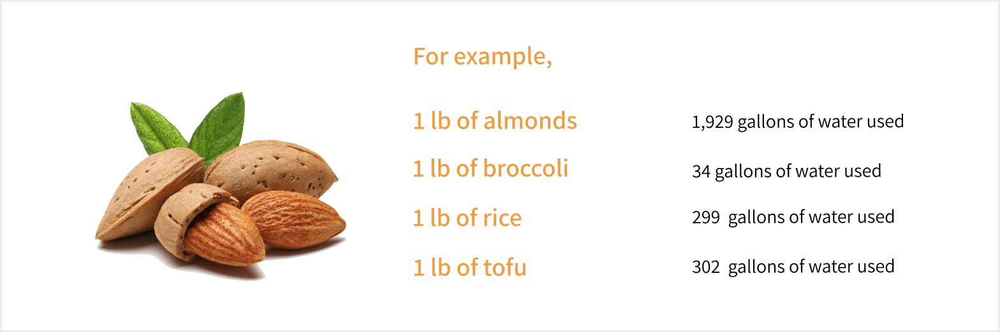
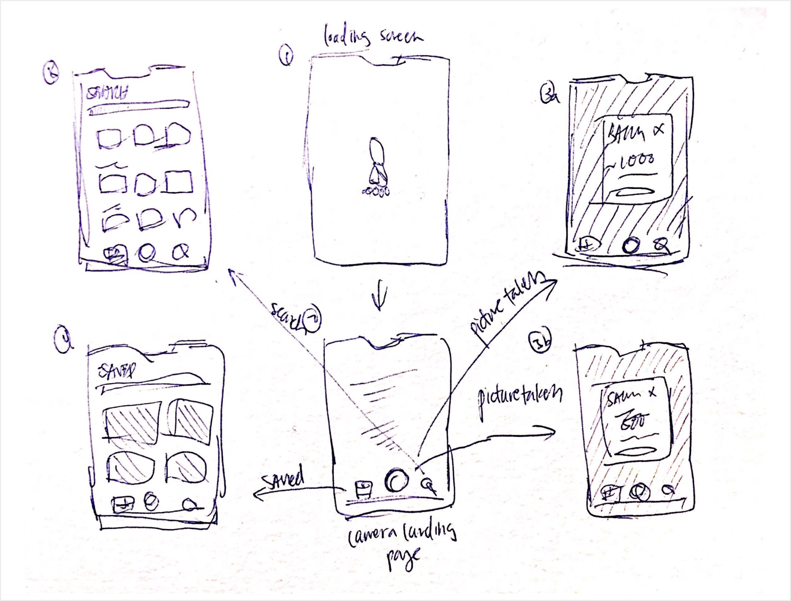

Overview
Footprint aims to raise awareness of water consumption through an innovative and visually eye-catching app. With a simple, eye-catching, and clear design, people of all ages—from adults to kids—can see and gain an understanding of the amount of hidden water in certain produce.
Identifying Needs
Our team decided to go on the sustainability track, as with water the most important resource on earth, we wanted to tackle the issue of water. We found that for first-world countries, the problem lies primarily water filtration, water conservation, and our water-related environmental footprint.
Specifically narrowing down into each, water conservation proved striking; the main issue with water conservation lies in the fact that the public isn’t well educated in where, and when, they are wasting water. With UC Davis as a notable agricultural school, we decided to focus on water conservation through an agricultural aspect.
Background Research
We often associate water conservation with cutting back on showers, gardening, and other examples, but it’s important to not that the food we eat also uses gallons of water to grow. Here, California grows “nearly half of all US fruits, veggies, and nuts”, that we are “on track to experience the driest year in the past half millennium” (motherjones). Fruits, nuts, and vegetables such as broccoli, almonds, and lettuce are accountable for the loss in water—so much so, that farms use about 80% of the state’s developed water (water from its natural source).

Problem Statement
There is a lack of easily accessible information about water consumption in produce bought by consumers, thus contributing to the growing sustainability issue today.
Footprint is an app that addresses the sustainability issue of water usage in the products we consume. By scanning the barcode attached to the price tag of grocery store items, the app displays how much water it takes to provide the produce and compare across brands to choose a water-wiser option.
Users + Audience
Our audience are people who want to live more sustainably.
Based on this, we created a persona portraying a target user. To help do this, we thought about common grocery chains that focused on sustainability (Whole Foods, Trader Joes, etc.) and modeled an archetype of what their average customer looked like.
Rapid Prototypes

In order to target the problem statement, our app needed to
1) Scan the barcode
2) Display how much water it took
3) Be able to save existing scans
4) Create a search functionality.
Thus, we implemented these features, as shown in these sketches.
Camera—Landing page; is a camera for the user to scan the Foodprint bar code.
Display pop-up—After the item is scanned, the pop-up informs the user of the water grade for the produce.
Saved—Shows saved items. Allows user to go back and see past scans.
Search—Allows users to search up water grade for produce in existing database.

Digital Prototypes

Outcomes + Results
Another aspect of Digital Marketing I was able to take on related to Social Media content creation. After researching Social Media best practices to utilize, as well as each social media channel's individual style + most engaged content type, I captured the Exploratorium voice to create written and ditigal content to promote upcoming events.